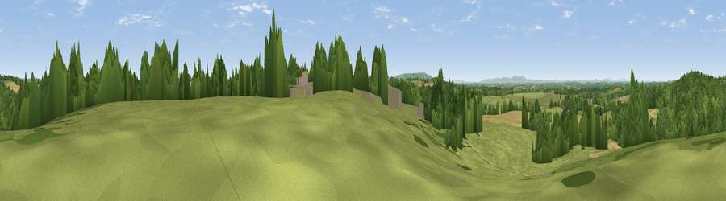

Viewpoint near Church Lench
#20964 in England · top 52% of its area beats it · near Church LenchThe view, rendered

A 360° render of this exact spot computed from the terrain model, tree cover and land cover — summer colours, afternoon light, calibrated against photographs of famous viewpoints. Real trees, hedges and buildings will differ in detail.
The panorama
Grey silhouette: terrain skyline in each direction (720 bearings, Earth curvature and refraction included). Dashed green: skyline with trees (+15 m) and buildings (+8 m) as obstacles. Blue strip: how far the ground is visible on each bearing.
Where the view opens
Wedge length = distance to the farthest visible ground on that bearing (vegetation-aware). Rings at 10, 25 and 50 km.
What fills the view
47% grassland · 35% woodland · 17% cropland ·
Angular shares of the visible panorama (visual magnitude), not map area. Landscape diversity 0.47 (0–1 Shannon).
Key numbers
More beautiful places nearby
The staircase of upgrades: each row has a higher view potential than everything closer. Driving times are estimates from straight-line distance, calibrated against real road routing — check an actual route before setting out.
| Place | Direction | Drive | Score |
|---|---|---|---|
| Rous Lench Hill | NNW · 2 km | ~6 min | 64.2 |
| Viewpoint near Lenchwick | SSW · 4 km | ~9 min | 66.0 |
| Viewpoint near Elmley Castle | SSW · 11 km | ~22 min | 76.9 |
| Viewpoint near Elmley Castle | SSW · 13 km | ~23 min | 79.5 |
| Viewpoint near Elmley Castle | SSW · 13 km | ~24 min | 80.5 |
| Bredon Hill | SSW · 13 km | ~24 min | 83.0 |
| North Hill | WSW · 26 km | ~42 min | 86.8 |
| Worcestershire Beacon | WSW · 26 km | ~42 min | 87.1 |
52.16109, -1.96670 · source: screening · position refined by local search. Computed location — check access rights before visiting.